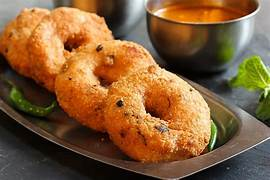
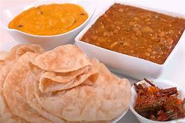
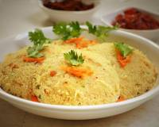
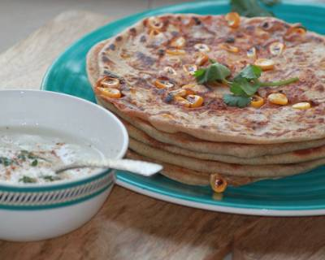
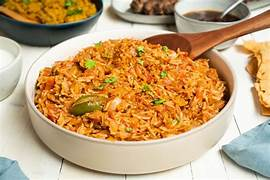
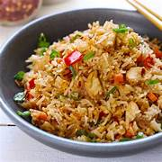
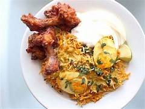
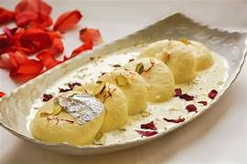
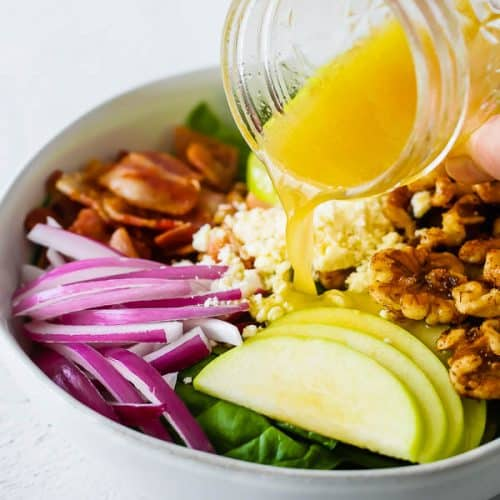
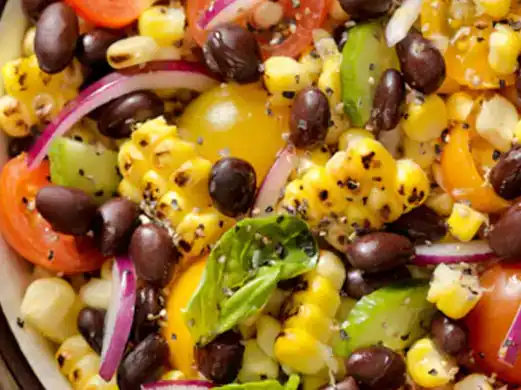

ùï±ùñëùñÜùñõùñîùñöùñó ùï±ùñöùñòùñéùñîùñì
Home
Recipes
Breakfast
Lunch
Desserts
Salads
Fusion
AboutUs
ContactUs
SignIn
Simple and easy food recipes
Cooking is like love. It should be entered into with abandon or not at all.
Pan Cake
Dosa
Chapathi

Vaada

Puri
Idli
Vegetable Rava Upma

Foxtail Millet Rava Idli
Sooji Upma With Coconut
Palak Ragi & Oats Wheat Thepla
Poha

Corn Stuffed Paratha
Veg Birayani

Tomato Rice
Paneer Biryani
Coconut Rice
Vegetable Fried Rice
Methi Pulav
Chicken Biryani
Mutton Biryani
Fish Biryani

Chicken Fried Rice
Egg Biryani

Chiken Lollipop Biryani
Gulab Jamun
Kaju Burfi
Rasgulla
Shrikhand
Mango Halwa
Toasted Coconut Ladoo

Rasmalai
Mysore Pak
Fruit Custard
Peanut Chikki
Date Balls
Karanji

Spinach Bacon Salad
Summer Couscous Salad
Chickpea Salad
Black Bean and Corn Salad
Spinach Pear Salad with Gouda and Hazelnuts
Chicken Pasta Salad
Broccoli Salad
Crisp Apple Salad
Mediterranean Salad
Warm Cucumber Lemon Salad

Indian Style Kachumber Salad
Crispy Noodle Salad
×